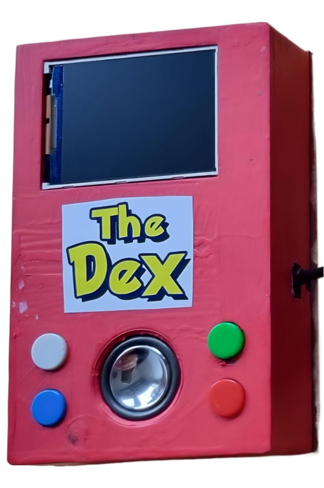

A handheld device that recognises objects through a camera, names them out loud, and keeps a browseable history of everything it has ever seen.

The goal was simple: build a thing that looks like a Pokedex and actually works like one. Point it at something, press a button, and it tells you what it is. Battery-powered, carryable, no laptop in the loop.
It only fires the classifier on demand — when the trigger button is pressed — so it doesn't spam itself with every frame. New detections are saved to a local "seen" list you can scroll through later with the side buttons. There's also a small joke baked in: when it sees a dog, it specifically calls it "bobi".
Device boots into a low-power background screen, waiting for input from one of the four GPIO buttons.
Press the main button. The Pi camera grabs a frame and runs it through an OpenCV DNN object detector with a 0.6 confidence threshold.
For every class it has never seen, the LCD shows a matching dex image and the speaker reads the name out loud via text-to-speech.
A second button lets you flip back through everything the device has ever recognised — like the original handheld's "seen" list.
A third button wipes the history. Good for handing it to someone fresh.
The repo only ships the Python that runs on the device — not the OS layer. For the OS, the easiest path is one of the prebuilt images from Q-engineering: either an image with OpenCV preinstalled or their prebuilt wheels.
Things I'd change next time: print the case in red filament directly so it doesn't need painting, and widen the cylinders on the front grill so they don't clog with paint.